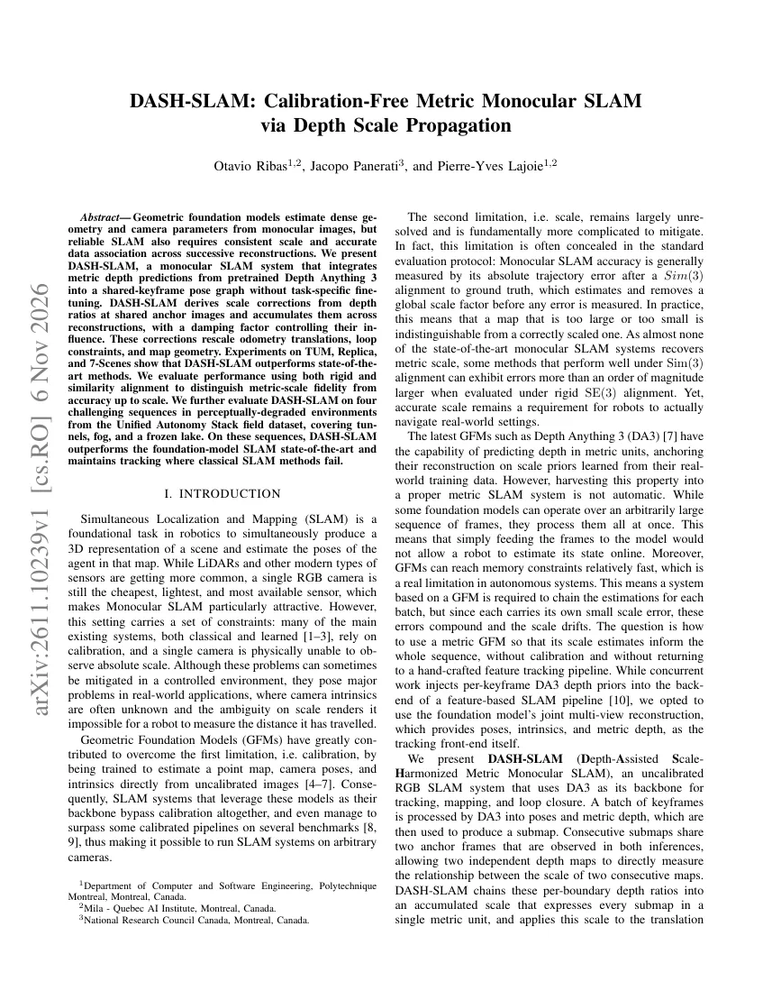
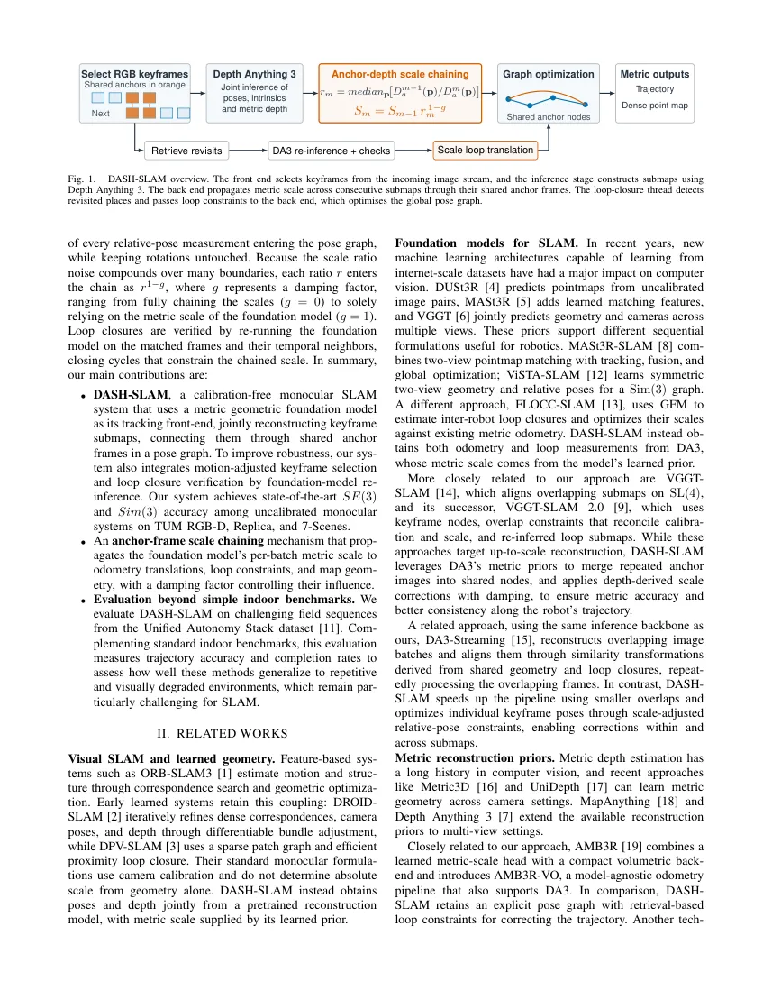

DASH-SLAM：用共享锚帧把 Depth Anything 3 的分批米制尺度串成一条可优化位姿图
DASH-SLAM: Calibration-Free Metric Monocular SLAM via Depth Scale Propagation
TUM RGB-D 上平均 ATE 0.028 m（Sim(3)）/0.078 m（SE(3)），Replica 0.008/0.045 m，7-Scenes 0.053/0.070 m；后两者在无标定方法中最低。尺度偏差分别为 2.1%、5.0%、0.8%，而纯 DA3 流式（DA3-Streaming）为 12.9%、4.1%、2.9%。速度 25.3–162.4 FPS；在 Jetson AGX Orin 上实测 13.57 FPS、峰值内存 14.51 GB。但在公里级 UAS 序列上，完整尺度链（g=0）反而使轨迹退化 29–58%、恢复尺度掉到 0.10–0.38，作者改用 g=1（只信每批自身米制尺度）才跑通。
Mean ATE Sim(3) on TUM
Mean ATE SE(3) on TUM
Scale deviation on TUM
FPS on Replica
作者、单位与技术谱系 · Research context
作者与单位
研究脉络
- Depth Anything 3（Lin et al., 2025）方法基座关系：位姿、内参与米制深度全部由它联合推理得到[论文 §III-B/§III-H]
- DA3-Streaming（ByteDance-Seed, 2025）方法上游关系：同样用 DA3 做长序列分块，但用重叠帧的相似变换对齐；本篇以它为同底座主对照[论文 §II 与表 II]
- VGGT-SLAM / VGGT-SLAM 2.0（Maggio & Carlone）方法上游关系：子图对齐 + 关键帧节点的位姿图范式，以及 SL(4) 参数化[论文 §II、§III-D]
- DASH-SLAM 本篇推进本篇推进关系：锚帧尺度串联 + SE(3)/Sim(3) 双评测 + 退化场景验证[论文 §IV-E/§IV-F]
合作网络
- 蒙特利尔理工学院 ↔ MilaPolytechnique Montréal → Mila – Quebec AI Institute关系：共同署名（同一作者双隶属）[论文首页署名]
- DASH-SLAM ↔ FLOCC-SLAM / 感知别名工作Pierre-Yves Lajoie → FLOCC-SLAM（RA-L 2025）、感知别名图模型（RA-L 2019）关系：同作者前作（研究脉络连续性）[论文参考文献 [10][11]]
- DASH-SLAM ↔ DA3DASH-SLAM → Depth Anything 3（ByteDance Seed）关系：技术依赖（几何与尺度来源）[论文 §III]
作者单位来自论文首页；脉络按“底座模型 → 同类分块方案 → 位姿图范式 → 本篇推进”组织，均可在正文引用处核对。Lajoie 的前作关系来自参考文献同作者，不推断其与学生/导师关系。
方法本质拆解 · What actually changed
是不是微调？
完全不训练：DA3 以 DA3NESTED-GIANT-LARGE-1.1 原权重推理，ViT 主干转 bfloat16（作者称显存降约 40%、精度无明显损失），没有任务特定微调。所有“学习”都发生在外部基础模型里，本篇贡献的是分批策略、尺度串联、位姿图与回环验证这些系统与估计算法组件。
有没有额外约束？
约束的核心是尺度：S_m 只乘在相对位姿的平移上，旋转不变；每批与上一批必须共享两个锚帧，锚帧上两套深度图的中值比提供尺度观测；位姿图用 SL(4) 参数化并固定首帧先验以消规范自由度。另有工程约束：每批 ≤32 关键帧、置信度低于 65 分位的像素丢弃、边界一致性阈值 15°/平移比 [0.5,2]、回环 Huber 核 k=1.345。
推理/后端到底做了什么？
推理是分批前向：DA3 对每批关键帧联合输出位姿、内参、米制深度与置信度，形成子图；后端把子图按锚帧尺度挂到全局 SL(4) 位姿图上，每来一批就用 LM 全图优化一次。回环不是特征匹配后 PnP，而是用 DA3 对候选帧组重新推理得到相对位姿，再按深度比与累积尺度换算到全局；地图不融合成固定点云，而是每帧存反投影点、按优化后位姿重投影，因此回环改正能直接传到地图。
方法本质是什么？
本质是把“米制深度”从一次性输出变成可累积、可被回环约束的尺度状态：锚帧深度比提供增量尺度观测，位姿图把增量尺度与回环放在同一个最小二乘里互相校正。它没有做的是显式建模尺度误差随时间的演化（阻尼 g 只是经验折中），也没有在特征层做数据关联，因此当纹理退化、回环检索失败时，尺度链会独立漂移。
输入是未标定单目视频 + 冻结的 DA3；改变的位置是子图之间的尺度与全局位姿图；约束动作是锚帧中值深度比串联、只缩放平移、回环重推理验证；直接效果是无标定下接近米制的轨迹与地图尺度。

结论与问题Conclusion & Motivation
核心结论
DASH-SLAM 的核心结论是：几何基础模型自带的米制深度不能直接拿来做 SLAM，必须解决“每批重建各带一点尺度误差、拼起来就漂”的问题；共享锚帧上的深度比提供了一个便宜且可累积的尺度观测量。结果上，它在 TUM/Replica/7-Scenes 三个室内基准上都拿到无标定方法的最低误差（0.028/0.008/0.053 m，Sim(3)），SE(3) 下优势更大（0.078 m 对 MASt3R-SLAM 的 0.122 m）。更重要的是它把“尺度是否真的米制”单独量化：TUM 偏差 2.1%、Replica 5.0%、7-Scenes 0.8%，而 DA3-Streaming 在 TUM 上是 12.9%。
动机与问题
单目 SLAM 的标准评测是先做 Sim(3) 对齐再算 ATE，这一步会把全局尺度误差整体消掉，于是一个“整体放大 20%”的地图和一个尺度正确的地图得分几乎一样。作者指出，不少在 Sim(3) 下表现很好的系统，换成 SE(3) 对齐后误差会大一个数量级；而对真正要导航的机器人来说，尺度错了就是走错距离。基础模型虽然给出米制深度，但受显存限制必须分批推理，每批有自己的小尺度误差，朴素拼接会在每个边界产生尺度跳变并累积。
方法Method
方法总览
四条并行线程：前端按“段级”选关键帧（每段 128 帧，按光流累积位移在 stride 8/16 之间切换），推理线程把关键帧分批送进 DA3 联合重建（批上限 32，前两批热身 16），得到本批局部坐标下的位姿、内参与米制深度。相邻批共享两个锚帧，后端用第一个锚帧的中值深度比 r_m 估计相对尺度，按 S_m=S_{m-1}·r_m^(1-g) 累积，并把 S_m 只作用到相对位姿的平移上（旋转不动），建立 SL(4) 节点的全局位姿图，用 GTSAM 的 LM 全图优化。回环线程用 DINO-SALAD 检索候选，再用 DA3 对“查询帧 + 匹配帧 + 各自邻帧”重新推理来验证与测量，测量结果先归一到查询子图尺度、再乘累积尺度进入图；边界若不一致（旋转差 >15° 或平移比超出 [0.5,2]）会用第三批推理做仲裁修复。
关键技术细节
尺度估计用中值而不是均值：r_m=median_p[D_a^(m-1)(p)/D_a^m(p)]，只取两批都有效的像素，因而对局部深度失败稳健。置信度过滤丢弃每批归一化置信度低于 65 分位的像素，剩余像素用各帧自己的预测内参反投影；位姿图因子包括相邻关键帧、批内间隔 4 帧的“加劲”因子、以及被两批独立测量两次的锚帧因子，噪声统一 σ=0.05。回环的接受策略偏保守：旋转不一致 <90° 立即接受，否则不丢弃而是“挂起”，等新子图到来重评，或连续 5 个子图无矛盾后单独接受；接受的回环用 Huber 核 k_loop=1.345。

实验Experiments
实验设置
数据集：TUM RGB-D 的 9 条 Freiburg1 序列、Replica 8 个标准场景、7-Scenes 每场景 seq-01 共 7 条；另有 NTNU-ARL UAS 四段退化场景（两条隧道、冰湖、雾天校园，真值路径 659–1427 m，鱼眼相机）。指标：ATE RMSE，分别按 Sim(3)（Umeyama，含尺度）与 SE(3)（不含尺度）对齐，另报平均 FPS、恢复尺度及偏差。对照：6 个无标定系统（DROID-SLAM、MASt3R-SLAM、ViSTA-SLAM、VGGT-SLAM 2.0、AMB3R、DA3-Streaming）与 5 个给定内参的标定系统（ORB-SLAM3、DPV-SLAM、DPV-SLAM++、DROID-SLAM、MASt3R-SLAM）；所有系统跑同一套数据加载与评分。硬件 RTX 4000 Ada（20 GB）+ Jetson AGX Orin。
实验数字与比较
TUM（表 I）：平均 Sim(3) ATE 0.028 m，低于 AMB3R 的 0.036 m 与 DA3-Streaming 的 0.103 m；平均 SE(3) 0.078 m，优于 MASt3R-SLAM 的 0.122 m，而 AMB3R/VGGT-SLAM/ViSTA-SLAM 在 0.231–0.522 m。Replica（表 II）：0.008 m（Sim(3)）/0.045 m（SE(3)），同底座的 DA3-Streaming 为 0.019/0.057 m，AMB3R 为 0.038/0.702 m。7-Scenes（表 III）：0.053/0.070 m，DA3-Streaming 为 0.082/0.093 m，AMB3R 为 0.053/0.388 m；7 段中 5 段排名第一或第二。尺度（表 IV）：TUM 1.021（偏差 2.1%）、Replica 1.050（5.0%）、7-Scenes 1.008（0.8%）；DA3-Streaming 分别为 0.871（12.9%）、1.041（4.1%）、0.971（2.9%）。UAS（表 V）：fyllingsdalen 64.19 m vs VGGT-SLAM 196.93 m，hornbill 75.84 m vs 148.90 m；campus_fog 前半段 2.66 m vs 46.08 m；frozen lake 上 ORB-SLAM3 反而最好（6.84 m），本文 74.35 m。
消融/失败边界
最有信息量的“反消融”在 UAS：把室内默认的完整尺度链（g=0）直接搬到公里级序列，轨迹退化 29–58%、恢复尺度掉到 0.10–0.38；作者分析是每个边界尺度误差虽与室内相当，但几百个边界累积后爆掉，于是空中序列改用 g=1（放弃串联、只信每批米制尺度）+ 更短子图（16 帧）。这等于承认：尺度串联的收益随序列长度反号，阻尼因子是场景相关超参，而不是普适常数。其他边界：frozen lake 上冰面纹理自相似，ORB-SLAM3 靠传统特征反而更准（6.84 m），说明基础模型路线在重复纹理下并不占优；campus_fog 四套系统都没有完整重建，只在“前一半轨迹”上比较。论文没有给出 g 的逐值消融（0、0.25、0.5、0.75、1），也没有单独关掉回环或边界修复的消融表，这两块是判断各模块贡献的空缺。
局限与迁移Limitations & Transfer
局限与待核验
作者明确承认：尺度串联不能原样迁移到公里级轨迹，需要更复杂的尺度模型来区分不同工况；UAS 上仍有很大残差（64–76 m）。我们待核验：g 只在“室内 0 / 空中 1”两个极端取值，缺少中间值扫描，因此无法判断最优阻尼是否与轨迹长度单调相关；回环与边界修复的独立贡献未量化；所有室内实验用 504 px 处理分辨率与 DA3NESTED-GIANT-LARGE-1.1，换更小模型后的尺度偏差未知；表 I 中部分基线（ORB-SLAM3）用 “X” 表示失败，失败判据未在正文定义。
与你研究路线的关系
第一个可迁移模块是“锚帧尺度串联”：共享观测上的中值深度比是一个几乎零成本的相对尺度观测，可以移植到我们多源融合中“视觉深度 / 激光 / PPP 高程”之间的尺度对齐层。第二个是评测纪律：同时报 SE(3) 与 Sim(3)，并单独报告恢复尺度与偏差，这能直接揭穿“靠 Sim(3) 对齐掩盖尺度错误”的对比，对我们写论文和审别人的结果都有用。下一步实验：在我们自己的数据集上先复现 g∈{0,0.5,1} 的尺度偏差曲线，再把锚帧尺度比作为一个带方差的因子接进现有平滑器，观察它对轨迹与地图尺度的影响是否与本文一致。